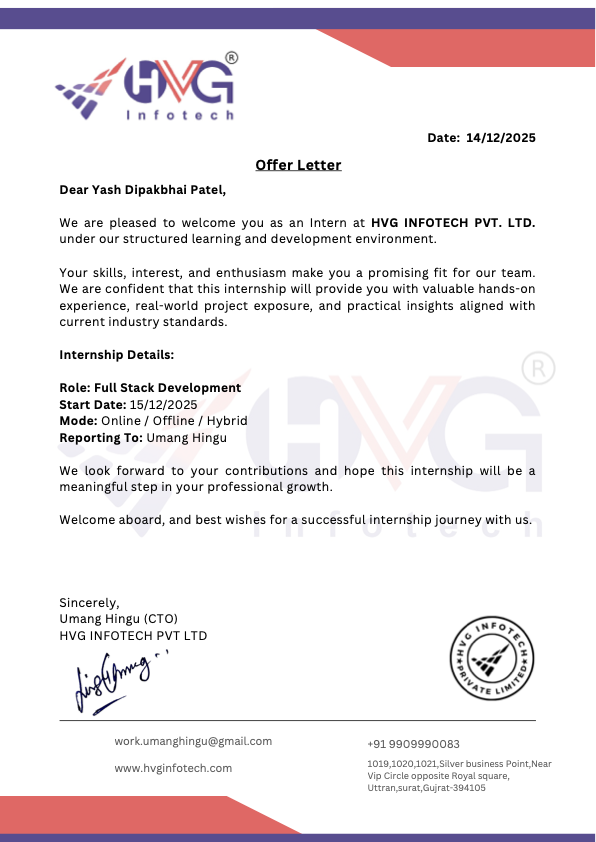
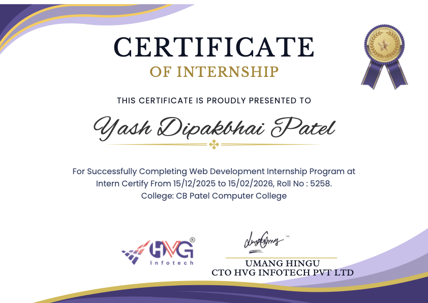

At this point, when I am about to finish my internship project work, it is my privilege to thank all those people for their contribution to this Internship. Firstly, I wish my heartfelt thanks to the Principal and Faculty of C. B. Patel Computer College, who always motivate me to fulfill my dreams and lead in the direction of growth. They have given valuable input for the effective completion of this project.
Next, I would like to thank our Placement & Internship Coordinators, who always work and think in the direction of betterment of the students and the institute, as well as supporting with all the necessary resources to finish our golden years of graduation. I thank my internal guide Mr. Miraj Mahant for his valuable and continuous guidance for the preparation of this Internship Training report.
I cannot forget the contribution of my external internship guide Mr. Umang Hingu and the industry supervisor at the organization without the support of whom I would have never completed this training. Their constant help, guidance, and continuous teaching have given so many inputs on the academic as well as the technical front. Their patience and expertise allowed me to navigate complex development hurdles efficiently.
I would also like to express my gratitude towards my family and friends for their kind co-operation and encouragement which helped me in the successful completion of this internship. This experience has significantly contributed to my personal and professional development.
Index
SR.NO
PARTICULAR
PAGE NO
1
Certificates
1-3
2
Declaration
4
3
Internship Details & Weekly Reports
5-8
4
Objectives of Internship
9
5
Description of Work Done & Modules
10-15
6
Learning Outcomes
16
7
Challenges and Solutions
17
8
Weekly Summary
18
9
Conclusions
19
10
Reference
20
Internship Offer Letter

Internship Completion Certificate

Internship Letter of Completion
Declaration
I hereby declare that the internship report on the EcoCart project presented here is my original work, conceptualized and executed under the supervision of my guide Mr. Umang Hingu during the course of my internship. The information submitted is authentic and has not been submitted entirely or in part for the award of any other degree or diploma.
Name: Yash Patel
Course: BCA (Bachelor of Computer Applications)
College: C. B. Patel Computer College
University: Veer Narmad South Gujarat University
Place: Surat
Date: 28th March 2026
Internship Details
Name and Address of the Organization:
HVG Infotech PVT ltd. 1019, 1020, 1021, Silver Business Point, Near VIP Circle, opposite Royal Square, Uttran, Surat, Gujarat - 394105
Mr. Umang Hingu Senior Software Engineer / Industry Supervisor
Nature of the Organization
HVG Infotech PVT ltd. is a premier software development and IT consulting firm that delivers innovative, scalable, and high-performance digital solutions to a global clientele. The organization specializes in modern web architectures, mobile application development, and cloud-integrated systems. With a core focus on the MERN stack and secure cloud deployments, HVG Infotech maintains a reputation for technical excellence and agile project management.
During my tenure, I was immersed in a professional dev-ops culture that emphasizes clean code practices, modular backend architectures, and secure data handling protocols. The hybrid working model allowed for direct mentorship during office hours while fostering independent problem-solving capabilities during remote development phases.
Tested all deployed modules rigorously fixing console errors and layout misalignments.
Debugging Tools
12-02-2026
Compiled project files orchestrating the Vercel branch integrations natively.
Vercel, Git
15-02-2026
Prepared and finalized formatting for final internship documentation report submissions.
HTML, CSS
Objectives of Internship
The primary objectives of undertaking this internship were to bridge the gap between academic theory and practical, industry-standard software engineering. In the context of the EcoCart project, the goals were:
Practical Application of Full-Stack Technologies: To apply the MERN stack (MongoDB, Express.js, React.js, Node.js) in building a responsive, real-world e-commerce application.
System Architecture & Database Design: To understand and execute robust NoSQL schemas using MongoDB Atlas, facilitating scalable data mapping for products, users, and orders.
Authentication and Security: To implement secure authorization workflows using Bcrypt and JSON Web Tokens (JWT), ensuring that sensitive user details and administrative features remain protected.
Frontend Interactivity & State Management: To master modern React.js paradigms, including the Context API and hooks, for dynamic features such as a real-time shopping cart.
Professional Workflow & Deployment: To familiarize myself with industry workflows, debugging practices, API testing, and seamless application deployment.
Description of Work Done
The operational framework of my internship was dedicated to the architecture and deployment of a professional-grade sustainable e-commerce application named EcoCart. This project leveraged the full MERN stack (MongoDB, Express.js, React.js, and Node.js) to deliver a seamless shopping experience for users interested in sustainable and eco-friendly products.
System Architecture Initialization: The foundation involved setting up a robust Node.js runtime environment. I utilized Express.js to architect structured RESTful API pathways that handle client requests for product data, user authentication, and order processing. The database logic was implemented using MongoDB Atlas, where I designed flexible NoSQL schemas using Mongoose. This allowed for scalable data relationships, such as linking user profiles to their transaction histories and cart states.
User Management & Security: A critical phase was implementing secure user authentication. I integrated Bcrypt for password hashing and used JSON Web Tokens (JWT) to manage persistent user sessions. This ensured that sensitive user data remained protected and that administrative routes were restricted to authorized personnel only.
Frontend Interactivity & Deployment: The user interface was developed using React.js, employing hooks like useState and useEffect for reactive state management. I implemented a dynamic shopping cart system using the Context API, allowing users to track their selections in real-time without reloading the page. The application was finally optimized for production and deployed on Vercel, utilizing CI/CD pipelines for automated updates from our Git repository.
Modules / Tasks Completed
Home Page
The Home Page serves as the primary landing hub for EcoCart, showcasing featured eco-friendly products and navigating users through the store's diverse categories. It utilizes React's functional components for reactive rendering and optimized loading states.
Module 1: User Registration and Login
Created user registration page with form validation
Implemented login authentication via JWT and session storage
Connected user data securely with MongoDB Atlas clusters via Mongoose
Executed password hashing using Bcrypt libraries for enhanced security
Login & Security Implementation
Module 2: Admin Dashboard
The Admin Dashboard provides a centralized interface for monitoring store operations, including user activity, order statuses, and overall sales metrics. It utilizes protected routes to ensure only authorized administrative personnel can access sensitive management tools.
Module 3: Product Management
This module handles the core inventory logic of the application. Admins can add new eco-friendly products, update existing details (price, description, stock), and delete obsolete entries. The interface is optimized for rapid data entry and visual clarity using CSS Grid layouts.
Module 4: Shopping Cart Interactivity
The shopping cart module enables users to review their selected eco-friendly products, adjust quantities locally, and securely proceed to checkout while managing dynamic application state efficiently using the React Context API.
Learning Outcomes
My tenure at the organization allowed me to acquire a diverse set of technical and professional skills that are essential in the modern software development industry. The practical nature of the tasks ensured that theoretical knowledge was effectively converted into usable industry expertise.
Full Stack Cohesiveness: I developed the ability to manage the entire data lifecycle, from designing backend database schemas to rendering that data on a dynamic frontend. This "big picture" understanding is vital for troubleshooting complex system-wide issues.
RESTful API Design: I mastered the principles of REST architecture, learning how to design intuitive and secure endpoints that can handle various HTTP methods and status codes reliably.
Advanced React State Management: Beyond basic components, I learned to use the Context API and custom hooks to manage global application state, ensuring a smooth and responsive user experience even with complex data requirements.
Industrial Security Protocols: The implementation of JWT and Bcrypt provided a solid foundation in web security, teaching me how to protect applications against common vulnerabilities like unauthorized access and data tampering.
Agile Development Practices: Working within a professional environment exposed me to version control (Git) and collaborative development workflows, teaching me how to manage feature branches and merge code efficiently.
Challenges and Solutions
Challenge: State Synchronization Bottlenecks
Problem: During the development of the cart module, asynchronous state updates occasionally caused UI glitches where the total price did not match the items listed in the cart. This led to user confusion and potential data inconsistency.
Solution: I refactored the cart logic to use React's Context API combined with a centralized action reducer. This ensured that every update to the cart triggered a synchronous state re-calculation across all relevant components, eliminating discrepancies and providing a reliable real-time interface.
Challenge: Database Connection Stability
Problem: Frequent timeouts were encountered when connecting the local development server to the remote MongoDB Atlas cluster, specifically during high-latency network intervals.
Solution: I implemented a robust reconnection logic within the Mongoose connection settings, increasing the timeout thresholds and adding retry mechanisms. Additionally, I optimized the database queries to be more specific, reducing the payload size and decreasing the overall connection time required for data retrieval.
Weekly Summary
Week Number
Summary of Major Accomplishments
Week 1
Initialized the EcoCart project ecosystem. Setup Node.js/Express server and established secure MongoDB Atlas connections. Implemented the core user schema and authentication logic (Bcrypt/JWT).
Week 2
Focused on the Backend Product Architecture. Developed comprehensive CRUD APIs for product management, image handling, and category-based sorting algorithms.
Week 3
Front-end Development phase. Built the responsive UI using React.js and Vite. Integrated the Context API for efficient shopping cart state management and persistence.
Week 4
Admin Dashboard & Final Deployment. Developed secure dashboards for order tracking and stock management. Conducted rigorous API testing via Postman and successfully deployed the EcoCart system on Vercel.
Overall, the internship followed a structured progression from system design to full-scale deployment, ensuring every core module was tested for scalability and security in a hybrid professional environment.
Conclusions
The internship at HVG Infotech PVT ltd. proved to be a transformative experience, bridging the gap between academic learning and professional software engineering. By working on the EcoCart project, I gained not only technical proficiency with the MERN stack but also a deep understanding of the professional workflows and standards required in the tech industry.
The successful deployment of a fully functional e-commerce application serves as a testament to the effectiveness of the training provided. I feel confident in my ability to architect, secure, and deploy complex web applications from scratch, navigating the various challenges that arise during the software development lifecycle.
In conclusion, this internship has solidified my interest in Full Stack development and has provided me with the necessary tools and mindset to contribute effectively to future engineering teams. The mentorship from Mr. Miraj Mahant and Mr. Umang Hingu was invaluable, and I am grateful for the opportunity to have worked in such a productive and innovative environment.